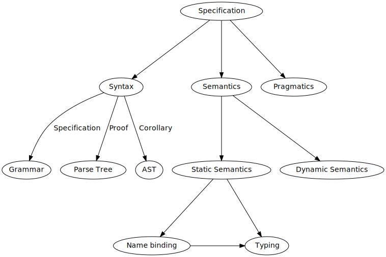

Software and Programming Language Theory
Static and dynamic semantics
Scope
Typing
Programming language specification

Programming language semantics
- Static semantics
- static properties of programs, which can be determined without executing them
- variable bindings (what does variable name correspond to)
- static type checking (do the expressions satisfy constraints of typing system)
- "context-sensitive" restriction on valid programs
- Dynamic semantics
- how do we compute the value of expressions, statements, etc.
- "recursively enumerable" restriction on valid programs
Naming
In programming languages we usually name entities
- variables
- function arguments
- classes
- modules
Binding
Binding is the process of assigning the meaning to a name.Scope
Scope of a binding is a textual region in program in which a binding is active. We may also use term scope to call the region of a program of maximal size in which no bindings are destroyed (masked).
Lexical scope (implemented in most of statically-typed programming languages, e.g. C/C++) binds identifiers inside some specific parts of program source code (lexical context).
Closure
A closure is a persistent scope which holds on to local variables even after the code execution has moved out of that block [1].
Static semantics: which variables to persist and share between closures?
Dynamic scope
Some languages (like ECMAScript/JavaScript or some kinds of LISP) have a concept of the dynamic scoping. Binding of identifiers occurs at run-time.
this in object-oriented language may be seen as either an implicit argument to a function or as a way of introducing a dynamic scope.
Name overloading
template<typename T>
T mul(int i, int j)
{
// If you get a compile error, it's because you did not use
// one of the authorized template specializations
const int k = 25 ; k = 36 ;
}
template<>
int mul<int>(int i, int j)
{
return i * j ;
}
template<>
std::string mul<std::string>(int i, int j)
{
return std::string(j, static_cast<char>(i)) ;
}If the language supports name overloading, the same identifier in the same place may have a different meaning depending on some external information (like typing). Usually in imperative languages name overloading is restricted to functions names.
int mul(int i, int j) { return i*j; }
std::string mul(char c, int n) { return std::string(n, c); }
int n = mul(6, 3); // n = 18
std::string s = mul(static_cast<char>(6), 2); // s = "110"
int n = mul<int>(6, 3); // n = 18
std::string s = mul<std::string>(54, 2); // s = "110110"
short n2 = mul<short>(6, 3); // error: assignment of read-only variable ‘k’Languages supporting function overloading: C++, C#
Languages without support for function overloading: Haskell, ECMAScript, C (but C11 has the_Generic keyword: http://stackoverflow.com/a/25026358)
Lexical scope declarative region
Where does declaration effect start/stop?
Use before definition
Static semantics representation
Let us return to the topic of formal mechanized analysis of programs.

Syntax is a transformation from String to AST. Static semantics, in the same way, is a transformation from AST to AST with variable bindings information. How would we store this information?
Easier approach: generate unique names and store scope in parallel.
AST+Bindings = Σ (ast : AST /[Id := ℕ]) . (scope : Map<ℕ, AST> ) . (p : ∀ { id : ℕ } ∈ ast, id ∈ scope).
Higher order abstract syntax
— the technique to capture the variable binding in abstract syntax tree (Miller, 1987; Phenning, 1988).Abstract syntax:
type var = string
type typ =
| Bool
| Arrow of typ * typ
type exp =
| Var of var
| True
| False
| App of exp * exp
| Abs of var * expParametrized Higher-order syntax captures the types of variables:
type ('t, 'V) exp =
| Var : 't 'V -> ('t, 'V) exp
| True : (bool, 'V) exp
| False : (bool, 'V) exp
| App : ('d -> 'r, 'V) exp * ('d, 'V) exp -> ('r, 'V) exp
| Abs : ('d 'V -> ('r, 'V) exp) -> ('d -> 'r, 'V) expOrnaments
Conor McBride. «Ornamental Algebras, Algebraic Ornaments»
One base data type defines the induction structure, basic constructors:
Then we place an additional data (ornament) to the leaves of the induction structure:
Recursion
Suppose we started translating AST to static semantics. Before we process second line and see that B is a class, what is the static semantics of B at the first line?
Approach: fixed point (works for classical Domain Theory, doesn't work well in a constructive setting).
N.S. Papaspyrou. Formal semantics of the C Programming Language (PhD thesis).
Homework assignments
Task 5.1. ** Implement a translator from simply-typed lambda calculus AST to HOAS in Haskell or any other language of your choice (except OCaml) which is expressive enough to represent HOAS.
Task 5.2. *** Implement a translator from simply-typed lambda calculus AST to PHOAS in Haskell or any other language of your choice (except the original OCaml) which is expressive enough to represent PHOAS.
Task 5.3. * Look at the assembly code generated by GCC on example code from "Closure" slide and explain how "closures" are implemented in this case.
Task 5.4. Describe static semantics of BNF in terms of Parametrized Higher Order Syntax.
- "on paper" (**)
- in Coq, following the original paper (***)
Project
Project Step 3. Implement a static formal semantics for your programming language (in Agda or Coq). Choose one of the following approaches.
- Project Step 3a. * Assign the unique identifiers (e.g. natural numbers) to each bindable identifier leaf in the AST and create the mapping between the unique identifiers and static semantics subtrees.
- Project Step 3b. ** Use Higher-Order Abstract Syntax.
- Project Step 3c. *** Use Parametrized Higher-Order Abstract Syntax